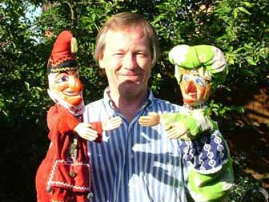
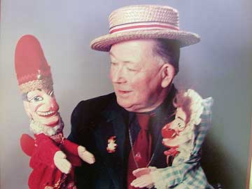

Family Pictures
This is a picture of myself, yes the one between Mr. Punch and Judy…! I have endeavored to carry on the Peasley family tradition of Children’s Entertainment and especially the “Punch and Judy Show” started so many years ago by my father Eric H Peasley. Affectionately know as “Ericko” and who sadly passed away in 1993 aged 80…

I to hope to continue to present the Family show for many years to come, and perhaps to be carried on by one of my two sons…!
"Ericko" probably performed his show to many thousands of children, and adults of course, over his interesting and varied life time…! He was born in Dorchester and lived in Bath for many years after his father was killed in the first world war…

"Ericko" had and ran his own concert party troupe, was a member of the Belgian Magic Circle, a professional Clown, joined and traveled with the circus and eventually settled down to become a full time child care officer with my mother Rose Peasley in Wolverhampton…! Quite a far removed life from his parents intended career for him as a Draper…!
He continued to perform his "Punch and Judy" shows after his retirement and was over eighty when he performed his last show.
I have a lot to thank him for.. ! A lifetime interest that has never failed to amuse me, and hopefully the Children and Adults that come to see my shows…! My father said and I quote here from his autobiography:
“It is true that as we approach the end of the 20th century, puppets have become very sophisticated, often manipulated electronically and by remote control…
They are astonishingly lifelike, but in my humble opinion they lack the spontaneity, charm, warmth and humanity that can only be found when the puppeteer is in direct contact with the puppet… Perhaps this is why Mr. Punch has given pleasure to millions …?
The fact is that in this world of wonderful machines and high technology, I believe that we can do one thing better, that is, we can give life to a simple puppet and so give pleasure to ourselves and others as we do so … “
Of course we are now in the 21st century and Punch‘s little play lives on in the hands of a relatively few like minded “Professors” which includes myself and my mother.. Rosa Peasley of Wolverhampton…!
-

Have a look at this lot!